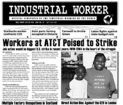

Submitted on Wed, 05/06/2009 - 2:04pm
Disclaimer - The opinions of the author do not necessarily match those of the IWW. The image pictured below and to the right did not appear in the original article, we have added it here to provide a visual perspective. This article is reposted in accordance to Fair Use guidelines.
By Damon Agnos - Seattle Weekly, Monday, May. 4 2009
 The National Labor Relations Board laid the smack down on the wrist of Starbucks last week,
siding with union organizers in finding that the coffee giant engaged
in unfair labor practices at eight Minneapolis-area stores. The union
said that Starbucks kicked visiting organizers out of their stores and
told them they couldn't talk about the union, and also retaliated via
disciplinary measures against employees who tried to organize.
The National Labor Relations Board laid the smack down on the wrist of Starbucks last week,
siding with union organizers in finding that the coffee giant engaged
in unfair labor practices at eight Minneapolis-area stores. The union
said that Starbucks kicked visiting organizers out of their stores and
told them they couldn't talk about the union, and also retaliated via
disciplinary measures against employees who tried to organize.
The
NLRB proposed a settlement, which Starbucks can accept or decline and
then face a formal complaint before an administrative law judge. But
the real kick is the employees' union. When I heard Starbucks employees
were organizing, I automatically thought it would be under the umbrella
of the SEIU, the fast-growing, aggressive, powerful union of service
industry employees (local branches of which recently protested in front of the First Hill Bank of America).
Instead, though, the Starbucks Workers Union is organized under the
Industrial Workers of the World (aka the Wobblies), the international
union that was a powerhouse in the early 20th century, opposing World
War I, calling general strikes, and facing violent repression from
business groups and government. (A particularly notable episode
occurred in Centralia.)
Those who keep close tabs on labor (or coffee) news probably know that
the IWW has been organizing in Starbucks and elsewhere, but for the
casual observer, it's a trip to see their name in the news.
Submitted on Thu, 04/30/2009 - 3:28pm
By Adam Welch - originally posted here.
 Yet again May Day quickly approaches.
Since 2006 the immigrant rights marches- made up of millions of
undocumented migrant workers along with their supporters, families and
children- has brought back May 1st to its original roots in the US. But
many are still unaware of its origins in US labor history and the
impact this commemorative day still has internationally- such as you
can still walk into neighborhoods in Mexico and find streets such as “Calle Los Mártires de Chicago” (Martyrs of Chicago Street).
Yet again May Day quickly approaches.
Since 2006 the immigrant rights marches- made up of millions of
undocumented migrant workers along with their supporters, families and
children- has brought back May 1st to its original roots in the US. But
many are still unaware of its origins in US labor history and the
impact this commemorative day still has internationally- such as you
can still walk into neighborhoods in Mexico and find streets such as “Calle Los Mártires de Chicago” (Martyrs of Chicago Street).
Below is a short, pamphlet length piece I edited on the origins and radical history of May Day. For an in depth look you might try Paul Avrich’s classic “The Haymarket Tragedy” and AK Press offers a listing of books they carry on the subject here. -AW
What is May Day and why is it called International Workers Day?
May
1st, International Worker’s Day, commemorates the historic struggle of
working people throughout the world, and is recognized in every country
except the United States and Canada. This is despite the fact that the
holiday began in the 1880’s in the United States, with the fight for an
eight-hour work day led by immigrant workers. The recent historic
marches and protests for immigrant rights, which began with “El Gran
Paro Americano 2006,” have brought back into our memories May 1 as an
important day of struggle. Although the history of the day has largely
been forgotten in the United States, it is still actively remembered
and celebrated today by workers, unionists and oppressed peoples all
over the world. In fact you can still walk through neighborhoods in
Mexico and find streets such as Calle Los Martires de Chicago in Oaxaca
City, Oaxaca, commemorating the leaders of the eight-hour day movement
who were imprisoned and executed.
Submitted on Tue, 04/28/2009 - 3:56pm

Headlines:
- Multiple Factory Occupations in Scotland
- Direct Action Bloc Against the G20 in London
- Canadian Workers Occupy Auto Parts Factory
Features:
- Workers at AT&T Poised to Strike
- Farewell FW Archie Green
- The Employee Free Choice Act, Class Conditions & Power
Download a free
PDF copy of this issue.
Submitted on Tue, 04/14/2009 - 12:45am
 By x359209 - IU 560 Job Shop (dual card CWA)
By x359209 - IU 560 Job Shop (dual card CWA)
IWW/CWA dual-carders in the heart of the struggle
At midnight April 5, 2009 contracts for most of the component groups represented by the Communications Workers of America (CWA) at the
telecom giant AT&T have expired. After weeks of mobilizing, around 90,000
workers are poised to strike one of the largest and most profitable
multinational corporations. A job action by CWA would be the largest and among the
most significant labor action in the United States since the UPS strike in 1997. It would also be the first major strike under the Obama regime.
The brewing confrontation could set the tone for class struggle in the
U.S. for the near future.
Attack on Healthcare
AT&T has been pressing hard for major concessions from its call
center, billing & ordering, and technical workers, especially in the area
of health care. The company is demanding harsh cost shifting in the form
of premiums and huge deductables for current employees and even steeper
cuts for “second tier” workers hired going forward. AT&T is also
demanding concessions in areas of seniority, over-time, and discipline. Raises
would be replaced for the first two years by one-time lump payments.
Billions in Profit
AT&T corporate PR hacks have been spinning that healthcare must be
reduced to avoid a repeat of what has happened to the U.S. auto industry. But
AT&T is not General Motors. It is in a growing, innovative industry - one
where AT&T bosses made $12.9 Billion in profits in 2008 alone. Besides, the
U.S. healthcare crisis and its skyrocketing costs are not the fault of
workers and their families and we should not be made to shoulder its burden. Workers at AT&T are furious that such a rich company would attack
their families’ access to healthcare.
Submitted on Thu, 04/02/2009 - 9:25am
 Headlines:
Headlines:
- General Strike in the French Antilles
- For Labor Solidarity with the NYU Student Occupiers
- Australians Rally in Support of 7-Eleven Workers in Geelong
Features:
- Colibri Workers Fight for Pay and Dignity
- Western Australian Miners Struggle
- Russian Union Defies Threats at Ford Plant
Download a free
PDF copy of
this issue.